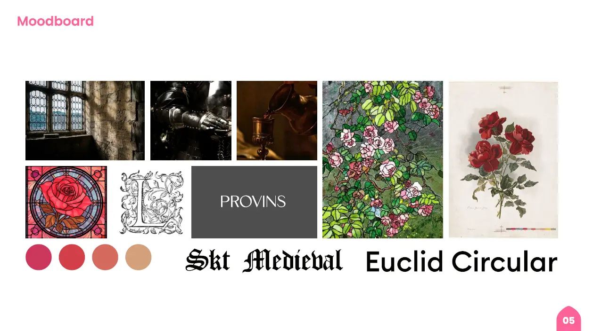

Campagne institutionnelle
Présentation
Par groupe de 3, nous devions réaliser une campagne institutionnelle autour de la ville d'un membre de notre groupe. Provins fut celle choisie et nous avons alors élaboré un moodboard autour de l'aspect médiéval de la ville mais aussi de ses roses qui est un de ses symboles. Des maquettes du site web en passant par les bannières et le logo, ce projet m'a permis de découvrir tout le travail à réaliser afin de mener une campagne institutionnelle.
Rôle
Réalisation des maquettes, d'une affiche et des mockups
Date
Octobre-Novembre 2023
Compétences
Figma
Photoshop
Illustrator
